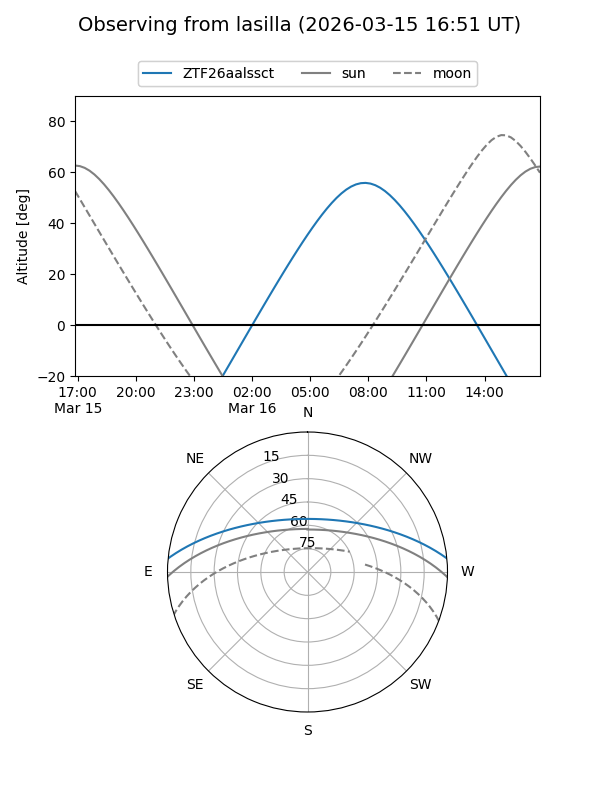
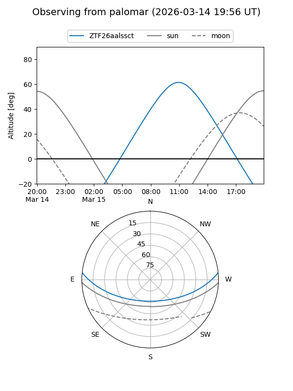

ZTF26aalssct
Target ZTF26aalssct at 2026-03-15 11:20
Aliases and brokers:
FINK: link
Lasair: link
ALeRCE: link
alt names
ZTF26aalssct (ztf,fink_ztf)
Coordinates:
equatorial (ra, dec) = 219.9911,+4.98764
equatorial (HMS+DMS) = 14:39:57.87,+04:59:15.51
galactic (l, b) = (357.1953,+55.96535)
Flags:
Photometry:
last ztfg=19.53
1 ztfg detections
Lightcurve
Visibility


Additional plots